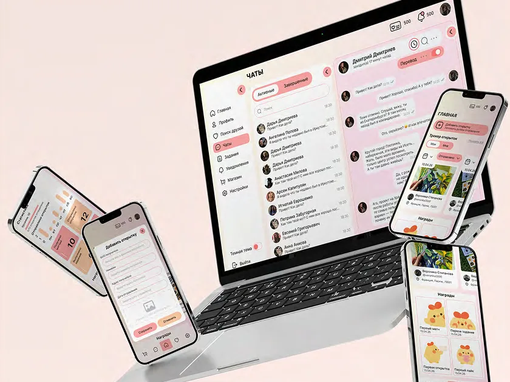
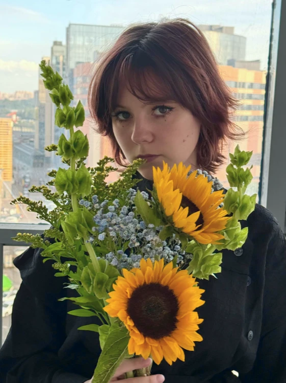
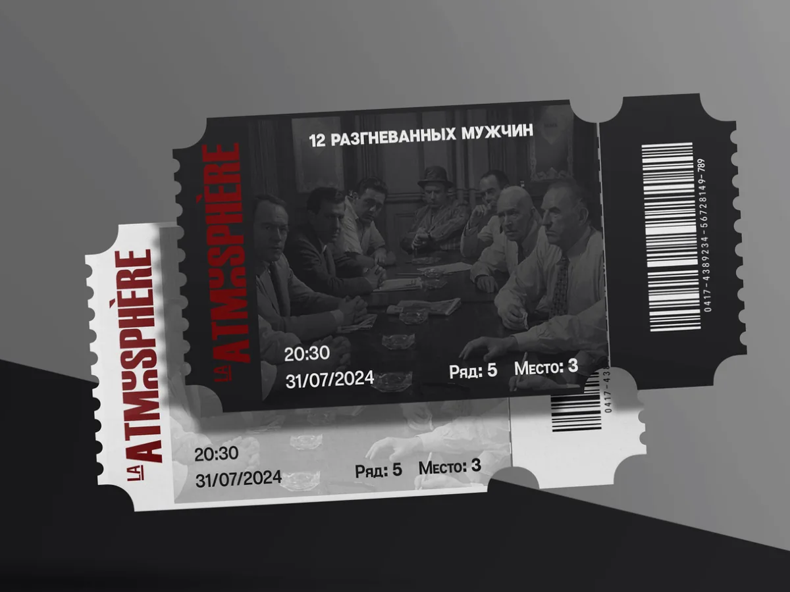
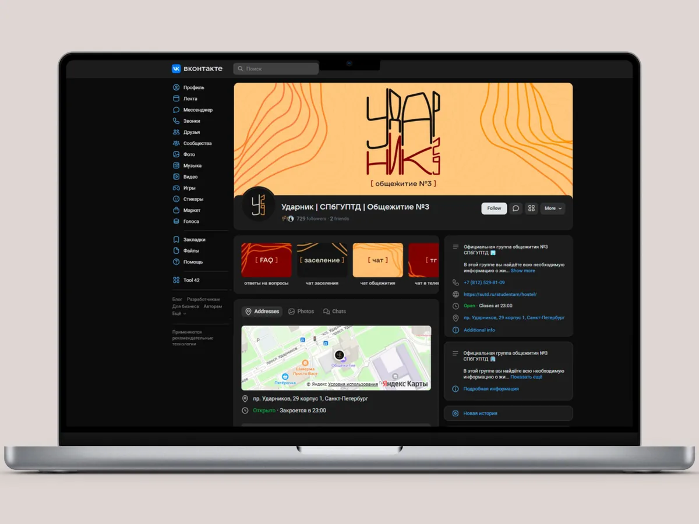
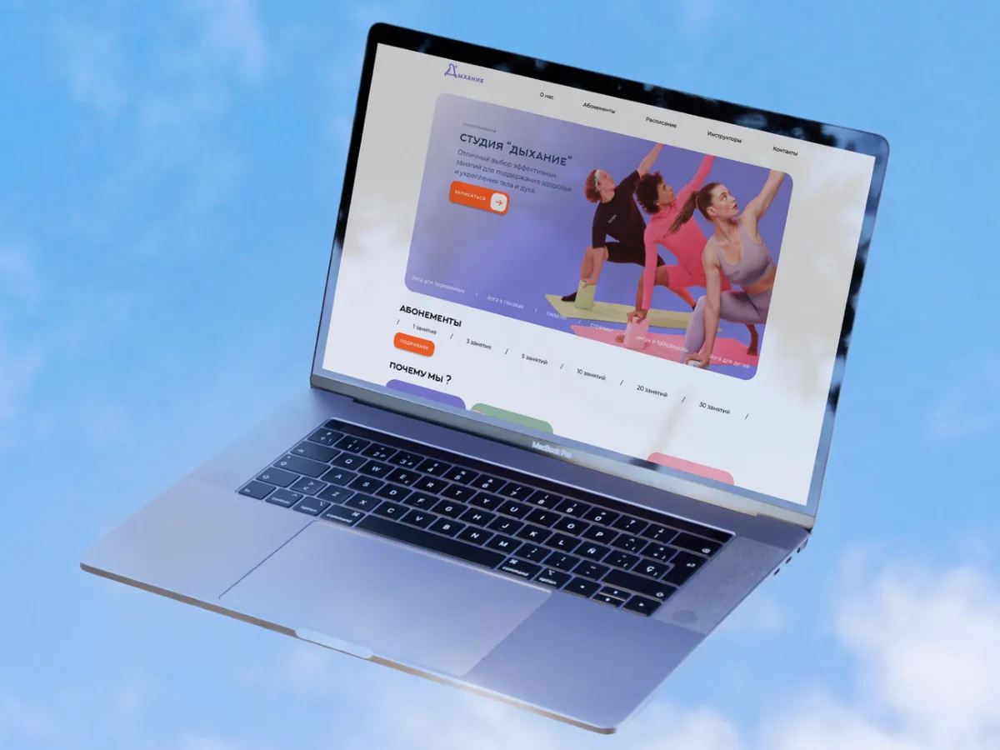
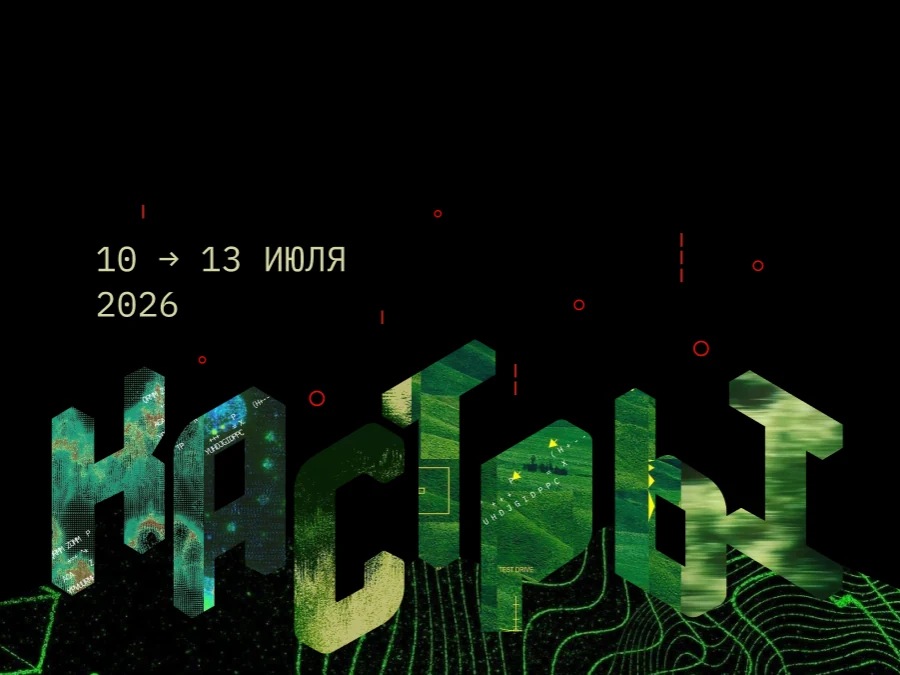

01 · ux/ui · 2026
открытково
приложение для обмена бумажными открытками и поиска друзей. на переписку 48 часов, потом чат закрывается.

делаю айдентику, интерфейсы и иллюстрации. у картинки должен быть характер, у макета — порядок.
учусь в спбгуптд на прикладной информатике в дизайне. до этого были графический дизайн в надипе и колледж полиграфии в алматы, поэтому думаю сразу и картинкой, и макетом: как работа поведёт себя в печати, на экране и в ленте соцсетей.
больше всего люблю задачи на стыке: собрать фирменный стиль, нарисовать к нему иллюстрации и довести до живого интерфейса. в командных проектах обычно беру визуальную часть и ui kit.
спбгуптд
прикладная информатика в дизайне, учусь сейчас
алматинский колледж полиграфии
специалист издательского дела
надип
графический дизайн
5 работ

01 · ux/ui · 2026
приложение для обмена бумажными открытками и поиска друзей. на переписку 48 часов, потом чат закрывается.

02 · фирменный стиль
фирменный стиль кинотеатра авторского кино: тёмный зал, красные кресла и свет проектора.

03 · ребрендинг · соцсети
новый стиль сообщества общежития №3 спбгуптд вконтакте: логотип, обложка, посты и кнопки меню.

04 · айдентика и сайт
айдентика и сайт студии йоги: пастельная палитра вместо бежевой, логотип и запись на занятия.

05 · сайт фестиваля
сайт фестиваля 10–13 июля 2026. буквы собраны из спутниковых снимков земли, вокруг — линии рельефа и навигационные метки.
беру иллюстрации, айдентику и оформление соцсетей. быстрее всего отвечаю в телеграме.